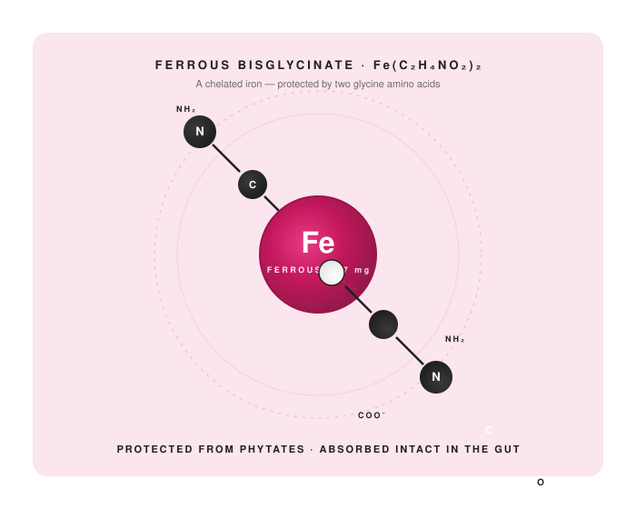
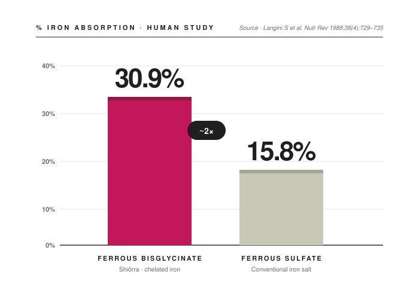
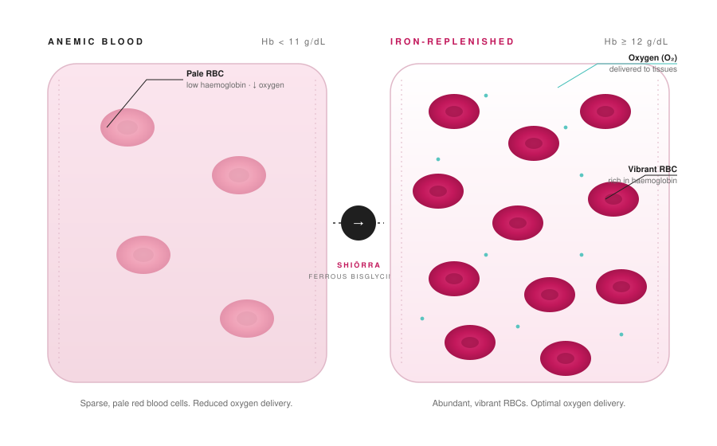
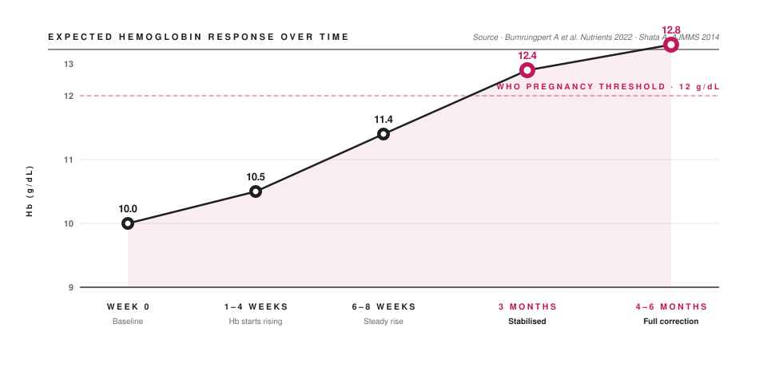
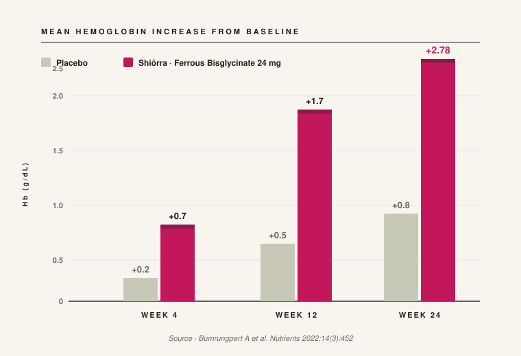

Higher iron absorption
Versus ferrous sulfate in phytate-rich diets — i.e. typical Indian meals.
Bovell-Benjamin AC et al · AJCN 2000;71(6):1563–9.
Abstract — Every claim on this page ties back to peer-reviewed nutrition and pharmacology literature on the active form Shiōrra Advanced Iron+ is built around — Ferrous Bisglycinate. Six chapters. Twelve citations. One thesis: iron should be active, gentle, and absorbed where the body is built to absorb it.

Most prenatal iron is ferrous sulfate or fumarate — cheap, but harsh on the gut and poorly absorbed alongside phytate-rich meals.
In Ferrous Bisglycinate, a single ferrous-iron atom is bonded between two glycine amino-acid molecules. This chelate protects the iron from binding with phytates — the phosphorus compounds in cereals, legumes and nuts that block iron absorption from a typical Indian meal.
Once it reaches the small intestine, dipeptidase enzymes split the bonds and release iron exactly where the body is built to absorb it.
Jeppsen RB & Borzelleca JF — Food Chem Toxicol 1999;37:723–731

In a peer-reviewed human study, ferrous bisglycinate was absorbed at 30.9% versus only 15.8% for ferrous sulfate.
In phytate-rich meals — i.e. typical Indian diets — the gap widens to ~4× higher absorption.
Result: a meaningful Hb rise at a much lower elemental dose. Less iron load, fewer side-effects, more delivered to red blood cells.
Langini S et al · Nutr Rev 1988 · Bovell-Benjamin AC et al · AJCN 2000
Chelation ensures iron reaches the duodenum & upper jejunum unchanged. Phytates can't bind to chelated iron — meaning more is available for absorption.
Adibi & Morse · J Clin Invest 1971Dipeptides are absorbed intact through enterocytes, where intracellular dipeptidases then split them — releasing additional usable iron beyond the standard pathway.
Adibi & Morse · J Clin Invest 1971Glycyl-glycine peptidases are present throughout the small intestine — so absorption isn't limited to the duodenum. Significant iron enters from the ileum too.
Adibi & Morse · J Clin Invest 1971
During pregnancy, blood volume expands by ~50% and the developing baby actively pulls iron from the mother.
Without supplementation, hemoglobin drops, red blood cells become pale and sparse, and oxygen delivery to your tissues — and your baby — falls.
Ferrous Bisglycinate raises iron stores at the source. Within weeks, red blood cells become abundant, vibrant, and rich in hemoglobin, and oxygen reaches every tissue that needs it.
Versus ferrous sulfate in phytate-rich diets — i.e. typical Indian meals.
Bovell-Benjamin AC et al · AJCN 2000;71(6):1563–9.
Mean Hb rise from baseline in pregnant women — at a lower elemental iron dose (24 mg vs 66 mg).
Bumrungpert A et al · Nutrients 2022;14(3):452.
Nausea 4% vs 23–49%, vomiting 0% vs up to 14%, constipation 1% vs up to 78%.
Shata A · Am J Med Med Sci 2014;4(1).
Because women can actually tolerate it — no metallic aftertaste, no upset stomach.
Shata A · Am J Med Med Sci 2014;4(1).
A typical responder profile based on the referenced randomized controlled trial. WHO threshold for pregnancy: Hb 12 g/dL.

Low energy, fatigue, breathlessness on exertion, dizziness.
Slight increase in energy, less afternoon tiredness, reduced dizziness.
Better stamina, oxygen delivery to tissues clearly improves.
Hb in normal pregnancy range. Normal daily activity without fatigue.
Sustained energy. Iron stores replenished. Restoration complete.

Pregnant women receiving ferrous bisglycinate showed clinically meaningful hemoglobin gains as early as week 4, with full correction over 6 months — at a much lower elemental iron dose than conventional iron salts.
Bumrungpert A, Pavadhgul P, Piromsawasdi T, Mozafari MR · Nutrients · 2022 Jan 20;14(3):452.
Information on this page is educational. It is not a substitute for medical advice. Consult your physician before beginning supplementation, especially during pregnancy or lactation.
Begin your daily Advanced Iron+ routine — one capsule, once a day, from the 4th month of pregnancy.